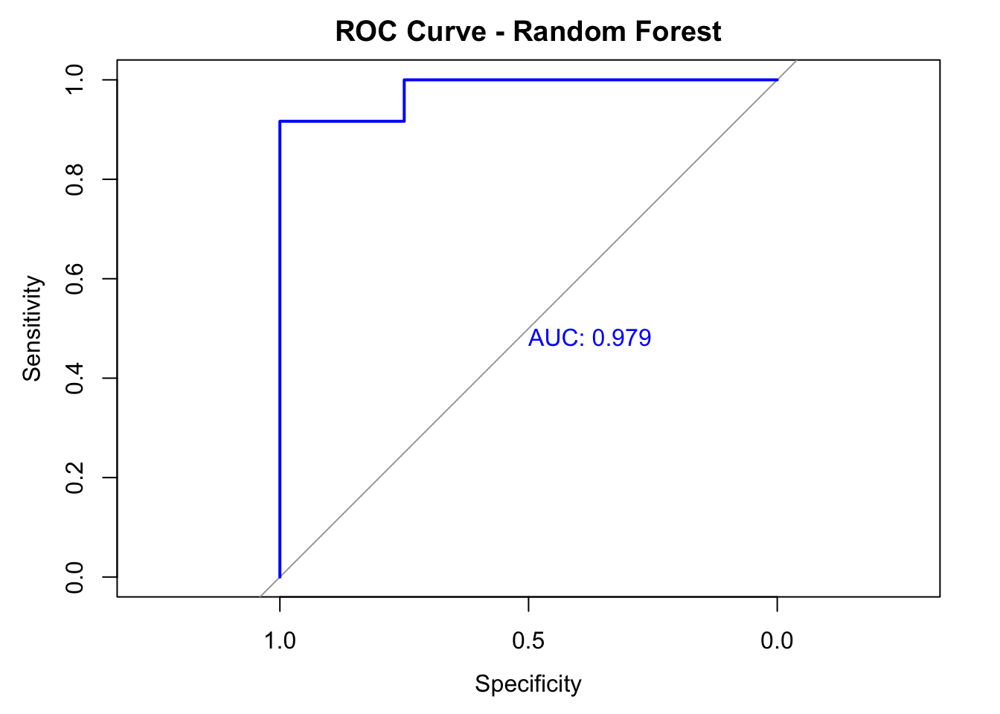
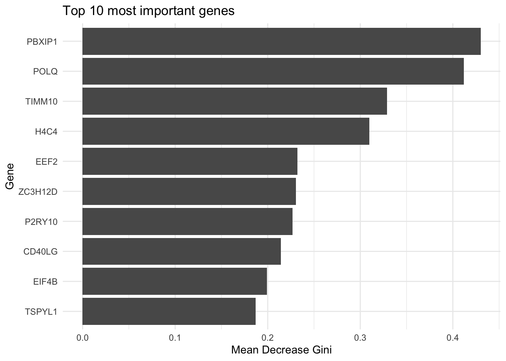

3 Machine Learning voor kankerclassificatie
Welke nieuwe skill wil je leren en waarom?
Ik wil leren hoe ik Machine Learning kan toepassen op biologische data met R. Ik heb al ervaring met R en RNA-seq-data-analyse, maar Machine Learning is voor mij een compleet nieuwe skill. Omdat ik mij verder wil ontwikkelen binnen de bio-informatica en computational biology, wil ik graag leren hoe algoritmen patronen kunnen herkennen en voorspellingen kunnen doen.
Hoe ga je de skill leren en wat is je planning?
Met 32 uur voor dit project, wordt dit mijn planning:
| Activiteit | Tijd |
|---|---|
| Theorie en basics van Machine Learning | 4 uur |
| Leren werken met tidymodels | 5 uur |
| Dataset zoeken en onderzoeken | 3 uur |
| Data preprocessing | 5 uur |
| Random Forest toepassen | 6 uur |
| Modellen evalueren en vergelijken | 5 uur |
| Resultaten uitwerken | 4 uur |
| Totaal | 32 uur |
Hoe ga je laten zien dat je de skill beheerst?
Ik wil een openbare genexpressiedataset gebruiken om de onderstaande onderzoeksvraag te beantwoorden:
“Can machine learning algorithms distinguish between healthy and COVID-19-affected tissue based on gene expression data?”
Het eindproduct wordt een zelfgeschreven R Markdown waarin ik de gebruikte code, dataverwerking, visualisaties, resultaten en conclusies presenteer. Hiermee laat ik zien dat ik zelfstandig een dataset kan verwerken, machine learning kan toepassen en de resultaten correct kan interpreteren.
3.1 Packages en data importeren
In deze stap laden we de benodigde packages en importeren we de genexpressiedata van GEO-dataset GSE152641.
library(edgeR)
library(randomForest)
library(caret)
library(pROC)
library(AnnotationDbi)
library(org.Hs.eg.db)
library(ggplot2)
# Import count data
filepath <- "data/GSE152641_Inflammatix_COVID19_counts_entrez.csv.gz"
covid19_exp <- read.csv(gzfile(filepath), check.names = FALSE)
# Create count matrix
counts <- as.matrix(covid19_exp[, -1])
rownames(counts) <- as.character(covid19_exp[[1]])
storage.mode(counts) <- "numeric"
# Check dimensions
dim(counts)## [1] 20460 863.2 Metadata en groepen ophalen
In deze stap halen we de metadata uit GEO op. Hiermee bepalen we welke samples afkomstig zijn van COVID-19-patiënten en welke van gezonde controles.
# Read metadata
geo <- readLines("data/GSE152641_family.soft")
# Find sample names and disease groups
sample_names <- grep("!Sample_title", geo, value = TRUE)
groups <- grep("disease:", geo, value = TRUE)
# Remove unnecessary text
sample_names <- sub("!Sample_title = ", "", sample_names)
groups <- sub(".*disease: ", "", groups)
# Combine information
samples <- data.frame(
sample = sample_names,
group = groups)
# Match samples with count data
samples <- samples[match(colnames(counts), samples$sample), ]
# Show group distribution
table(samples$group)##
## COVID19 Healthy control
## 62 243.3 Data controleren
We controleren of de expressiematrix en metadata correct zijn ingelezen en aan elkaar gekoppeld.
## [1] TRUE## [1] 0##
## COVID19 Healthy control
## 62 243.4 Data filtering en normalisatie
We splitsen de data eerst en filteren genen uitsluitend op basis van de trainingsset.
# Set a seed to ensure reproducible results
set.seed(123)
# Convert the sample groups into a factor
outcome <- factor(samples$group)
# Split the data into 80% training and 20% testing
train_index <- createDataPartition(outcome, p = 0.8, list = FALSE)
# Filter genes using only the training samples
keep <- filterByExpr(DGEList(counts = counts[, train_index],
group = outcome[train_index]))
# Keep the selected genes in all samples
y <- DGEList(counts = counts[keep, ])
# Use a training sample as the reference for TMM normalization
y <- calcNormFactors(y, method = "TMM", refColumn = train_index[1])
# Convert counts to logCPM and transpose the matrix
expression <- t(cpm(y, log = TRUE))
# Show the number of samples and genes after filtering
dim(expression)## [1] 86 152823.5 Random Forest trainen
We controleren de verdeling van de trainings- en testset en trainen vervolgens het Random Forest-model.
## [1] 70 15282## [1] 16 15282## y_train
## COVID19 Healthy control
## 50 20## y_test
## COVID19 Healthy control
## 12 4# Train Random Forest model
set.seed(123)
rf_model <- randomForest(x = x_train, y = y_train,
ntree = 500, importance = TRUE)
rf_model##
## Call:
## randomForest(x = x_train, y = y_train, ntree = 500, importance = TRUE)
## Type of random forest: classification
## Number of trees: 500
## No. of variables tried at each split: 123
##
## OOB estimate of error rate: 7.14%
## Confusion matrix:
## COVID19 Healthy control class.error
## COVID19 48 2 0.04
## Healthy control 3 17 0.153.6 Model evalueren op de testset
We testen hoe goed het model COVID-19-patiënten en gezonde controles kan onderscheiden met ongeziene data.
# Predict the groups of the test samples
predictions <- predict(rf_model, newdata = x_test)
# Compare predicted groups with actual groups
confusionMatrix(predictions, y_test, positive = "COVID19")## Confusion Matrix and Statistics
##
## Reference
## Prediction COVID19 Healthy control
## COVID19 12 1
## Healthy control 0 3
##
## Accuracy : 0.9375
## 95% CI : (0.6977, 0.9984)
## No Information Rate : 0.75
## P-Value [Acc > NIR] : 0.06348
##
## Kappa : 0.8182
##
## Mcnemar's Test P-Value : 1.00000
##
## Sensitivity : 1.0000
## Specificity : 0.7500
## Pos Pred Value : 0.9231
## Neg Pred Value : 1.0000
## Prevalence : 0.7500
## Detection Rate : 0.7500
## Detection Prevalence : 0.8125
## Balanced Accuracy : 0.8750
##
## 'Positive' Class : COVID19
## 3.7 ROC-curve en AUC berekenen
We evalueren het onderscheidend vermogen van het model met de ROC-curve en AUC.
# Calculate probabilities
probabilities <- predict(rf_model, x_test,
type = "prob")[, "COVID19"]
# Calculate ROC curve
roc_model <- roc(y_test, probabilities,
levels = c("Healthy control", "COVID19"))
# Calculate AUC
auc(roc_model)## Area under the curve: 0.9792# Plot ROC curve
plot(roc_model,
main = "ROC Curve - Random Forest",
col = "blue", print.auc = TRUE)
3.8 Belangrijkste genen identificeren en visualiseren
We identificeren de tien belangrijkste genen op basis van Mean Decrease Gini, vertalen de Entrez Gene IDs naar gensymbolen en visualiseren de resultaten.
# Calculate gene importance
gene_importance <- as.data.frame(importance(rf_model))
# Select top 10 genes
top_genes <- head(gene_importance[order(gene_importance$MeanDecreaseGini,
decreasing = TRUE), ], 10)
# Convert Entrez IDs to gene symbols
top_genes$SYMBOL <- mapIds(org.Hs.eg.db,
keys = rownames(top_genes),
column = "SYMBOL",
keytype = "ENTREZID",
multiVals = "first")
# Plot top 10 most important genes
ggplot(top_genes, aes(reorder(SYMBOL, MeanDecreaseGini), MeanDecreaseGini)) +
geom_col() +
coord_flip() +
labs(title = "Top 10 most important genes",
x = "Gene", y = "Mean Decrease Gini") +
theme_minimal()
3.9 Discussie
In dit onderzoek is onderzocht of een Random Forest-model COVID-19-patiënten kan onderscheiden van gezonde controles op basis van genexpressieprofielen uit bulk RNA-seq-data. Het model behaalde een accuracy van 93,75% en een AUC van 0,9792. Dit wijst erop dat het model in deze dataset goed onderscheid kan maken tussen beide groepen.
De sensitiviteit bedroeg 100%, wat betekent dat alle COVID-19-patiënten in de testset correct werden geclassificeerd. De specificiteit was 75%: drie van de vier gezonde controles werden correct geclassificeerd. Eén gezonde controle werd ten onrechte als COVID-19-patiënt voorspeld.
De resultaten moeten echter voorzichtig worden geïnterpreteerd vanwege de beperkte omvang van de testset. Deze bestond uit slechts 16 samples, waarvan 12 COVID-19-patiënten en 4 gezonde controles. Hierdoor kan één verkeerd geclassificeerd sample een relatief grote invloed hebben op de prestatiematen. Bovendien is het model geëvalueerd op samples uit dezelfde dataset waarop het is getraind. Externe validatie met een onafhankelijke dataset is daarom nodig om te bepalen of het model ook op andere patiëntengroepen goed presteert.
Daarnaast zijn de tien belangrijkste genen geselecteerd op basis van Mean Decrease Gini. Deze maat geeft aan welke genen belangrijk waren bij de voorspellingen van het Random Forest-model. Dit betekent niet automatisch dat deze genen specifieke biomarkers voor COVID-19 zijn. Verder onderzoek is nodig om hun biologische relevantie te onderzoeken.
3.10 Conclusie
Het Random Forest-model was in staat om COVID-19-patiënten en gezonde controles te onderscheiden op basis van bulk RNA-seq-genexpressiegegevens. Het model behaalde een accuracy van 93,75% en een AUC van 0,9792, wat wijst op sterke classificatieprestaties binnen de gebruikte dataset.
Hiermee laten de resultaten zien dat Random Forest een veelbelovende methode kan zijn voor het classificeren van COVID-19 op basis van genexpressieprofielen. Vanwege de kleine testset en het ontbreken van externe validatie kan echter nog niet worden geconcludeerd dat het model betrouwbaar toepasbaar is op nieuwe, onafhankelijke patiëntengroepen.